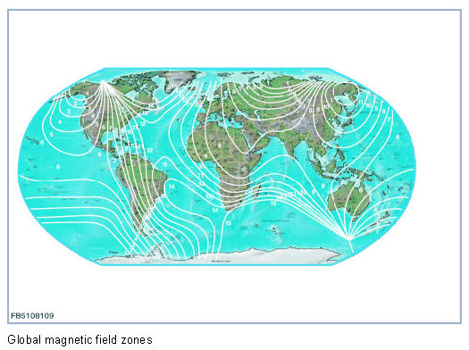

Adjusting the Compass Display
Adjusting The Compass Display
1. Calibrating the compass
The digital compass must be calibrated manually upon initial operation of the vehicle at the dealer's and after the inside mirror has been renewed.
Manually calibrate compass:
1. Switch on the ignition
2. Press the control button until "C" for calibration appears.
3. Start the vehicle.
4. Drive in a circle 2 to 3 times at a maximum of 7 km/h until a direction is displayed (calibration to the vehicle's magnetic field). The circle must be at least twice the vehicle's turning circle.
NOTICE: Check the calibration.
The earth's magnetic field can be deflected, e. g. by underground railway lines. A strongly deflected magnetic field will lead to calibration errors. If the digital compass displays an incorrect reading, check the calibration.
NOTICE: Automatic calibration.
The system can calibrate itself automatically. It will automatically compensate for a slight change in the vehicle's magnetic field. If it is not possible to carry out adequate calibration within 5 minutes, the compass switches to the mode for manual calibration "C". This occurs if the calibration value deviates significantly from the value measured by the magnetic field sensor (more than the earth's magnetic field, approx. 180 milligauss). After driving in a circle or cornering a few times, the digital compass is operational again.
2. Adjust the magnetic field zone
The magnetic field zone for the compass must be adjusted manually.
1. Read the desired magnetic field zone from the map.
2. Switch the ignition on.
3. Press the control button until a number appears on the display.
4. Select the desired magnetic field zone by pressing the control button again.
5. The menu for the setting closes automatically after a short time. The menu can be accessed again at any time.
The appropriate magnetic field zone must be selected from the graphic for the relevant country. There are 15 magnetic field zones worldwide.

NOTICE: Change to a different magnetic field zone.
Changing to a different magnetic field zone does not affect the display. 1 Magnetic field zone means a deviation of 4.5 degrees, e. g. journey from Germany to Portugal (magnetic field zone 8: Germany, magnetic field zone 9: Portugal The customer only notices a deviation from approx. 22.5 degrees (1 segment for the changeover).